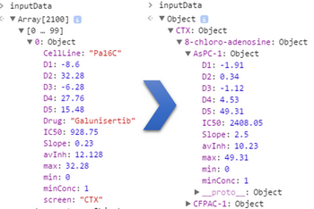

This is the actual user script to use the linked-charts library.
<script>inputData = [{"CellLine":"Pa16C","Drug":"Galunisertib","minConc":1, ...}, ... ];</script><script>inputData = lc.separateBy(inputData, ["screen", "Drug", "CellLine"]);var drugs = Object.keys(inputData.RTG),cellLines = Object.keys(inputData.RTG[drugs[0]]);var selDrugs = [drugs[0], drugs[1]],selCellLine = cellLines[0];var heatmap = lc.heatmapChart().rowIds( drugs ).colIds( drugs ).value( function( rowId, colId ) {var rowValues = cellLines.map(function(e) {return inputData.RTG[rowId][e].avInh;}),colValues = cellLines.map(function(e) {return inputData.RTG[colId][e].avInh;});return lc.pearsonCorr( rowValues, colValues );})....place( "#heatmap");heatmap.cluster("Row").cluster("Col");var scatterplot = lc.scatterChart().dataIds( cellLines )....place( "#scatterplot" );var curveFit = lc.scatterChart("drug1")....npoints( 5 ).x( function( k ) {return k;} ).y( function( k ) {return inputData.RTG[selDrugs[0]][selCellLine]["D" + (k + 1)];}).colour( "blue" );lc.scatterChart("drug2", curveFit).npoints( 5 ).x( function( k ) {return k} ).y( function( k ) {return inputData.RTG[selDrugs[1]][selCellLine]["D" + (k + 1)];}).colour("red").place( "#scatterplot" );</script>
Click on all the yellow bubbles ( ),
going from top to bottom, to see explanations of the code.
),
going from top to bottom, to see explanations of the code.
Just like it has been done in the previous example, here, the data was exported from R using toJSON function. Yet, here we exported the entire data frame with experiment results without any attempts to optimize data for using it in JavaScript. Therefore, all data are contained in a single variable inputData. This variable is an array with each element corresponding to a row of the original data frame. All elements are objects with the following properties: cellLine, Drug, minConc, D1, D2, D3, D4, D5, IC50, Slope, max, min, avInh, screen.
The linked-charts library often requires to access a specific row of the data table. For example, here we will often want to get a value of avarage inhibition for a specific drug testet against a specific cell line measured using RealTime-Glo assay. To avoid excessive filtering one can assign a unique ID to each sample, as it was done in the previous example. Another way to address this problem is demonstrated here
Function separateBy(dataset, properties) is a part of the linked-charts library. It takes the data in a form of an array or object and converts it into hierarchical, tree-like form, consequently separating the data by the values of provided properties.
The figure bellow illustrates the transformation of inputData made by this function.
It can be more convenient to keep lists of all tested drugs and cell lines in separate variables.
These global variables provide the link between plots on this page:
selDrugs stores names of the two drugs user selects by clicking on a heatmap cell, selCellLine stores name of the cell line user selects by clicking on a point of the correlation scatter plot.
Here, we instantiate the first chart, namely the heatmap on the left. The heatmap is one of the standard chart types provided by the linked-charts library.
Instead of setting the number of points (rows and colums for the heatmap) one can use an array of IDs of all displayed points (rows and columns). By default the IDs are also used as row and column labels, but this can be changed by user. If these properties are not set by the user, each point (row and column) gets a consequent number as an ID.
As it was described in the previous example, the value property is used to get the value that the cell with the given position should show given the row and column IDs of the cell. Here, the function looks more complicated due to different form of the data. First, we need to store avarage inhibition values for each cell line in two separate variables and only after can we calculate Pearson correlation.
The place functions insert the object just defined into the web page. The argument is a CSS selector, here selecting the tabl elements that were marked with id attributes as the places to take up the charts.
Each plot is placed into a separate div element, so one can place several charts into one element. Here, both scatterplots are placed into a single table cell.
Some lines of code, whose functionality had been already described in previous examples, were omitted for the sake of simplicity. Here, you can find the complete working code.
To cluster rows or columns of a heatmap one can use cluster function. By default, the Eucledian metric is used, but other metric can be provided via clusterRowMetric and clusterColMetric functions. For clustering we use clusterfck library.
Here, we initialize a "scatterChart" object. This is one of the standard chart types provided by our "linked-charts" library.
In the following lines, we set the objects properties
Here, we initialize a plot with two layers (both are scatter plots). Layers are created by the same function we used to make a single-layer scatter plot. scatterChart function has two optional arguments. First sets the ID of a new layer. If not defined, the ID for a layer will be automatically set to layerN, where N is a number of the layer starting from 0. The second argument is a chart to which the new layer should be added. If not defined a new chart is initialized.
So here we are creating a new chart that contains one layer, which is a scatter plot and has ID drug1
Here, we add drug2 layer to the chart curveFit. The new layer is automatically set active, which means that the properties we define in the next few lines are being set for this new layer. To chage properties of the first layer one need either set it active (chart.activeLayer(id)), or use get_layer(id) function.
As it will be shown in the next example, the same chart can also be generated with only one layer, but having different types of plots on one chart (e.g. scatter plot and lines) always requires layers.
If dataIds property is not set, scatterChart tries to define the number of points, which can be not possible in some cases. If this is the case, then one should define the number of points manualy by setting the npoints property.
Here, each drug was tested at five different concentrations, so the number of points is fixed for all cases.
Here, we define the functions that are called for each data point to get its x and y coordinate. As an argument these functions get an ID of the data points.
Here, we define colour for all points of the layer.